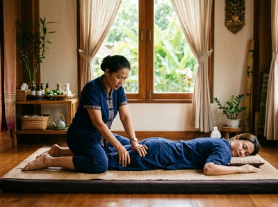

If you have never had a Thai massage before, knowing what to expect can make all the difference between arriving relaxed and arriving anxious.
Thai massage is unlike most massage styles you may have encountered. You stay fully clothed, there is no massage table, and your therapist guides your body through assisted stretches. They also apply targeted pressure along the body's sen energy lines. This article walks you through every stage of a session so you know exactly what to expect.
Arrive a few minutes early so you can complete a brief consultation with your therapist. They will ask about any injuries, areas of tension, or health conditions that may affect the treatment. This is the time to mention lower back pain, sports injuries, or anything else that needs attention.

Wear loose, comfortable clothing that does not restrict movement. Joggers or leggings work well. Traditional Thai massage is done fully clothed on a floor mat. Leave jewellery and belts at home, and avoid a heavy meal in the hour before your visit.
Ready to book your first session? Book online now and we will take care of the rest.
Your therapist will start with gentle compression work. They apply rhythmic pressure using their hands, elbows, knees, and feet along the sen energy lines that run through the body. This warms the muscles and helps circulation before the deeper stretching begins.
The session then moves into assisted stretching. Your therapist guides you through positions that resemble yoga poses — including twists, hip openers, and spinal extensions. You do not need to hold these positions yourself. Your therapist does the work.